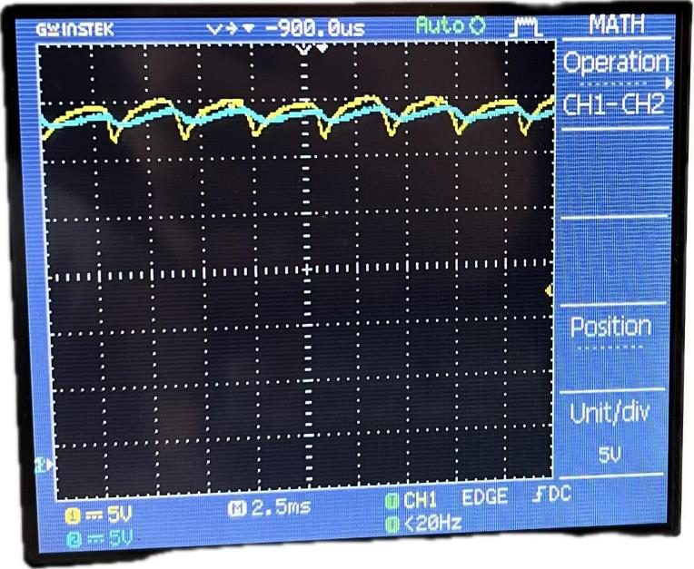
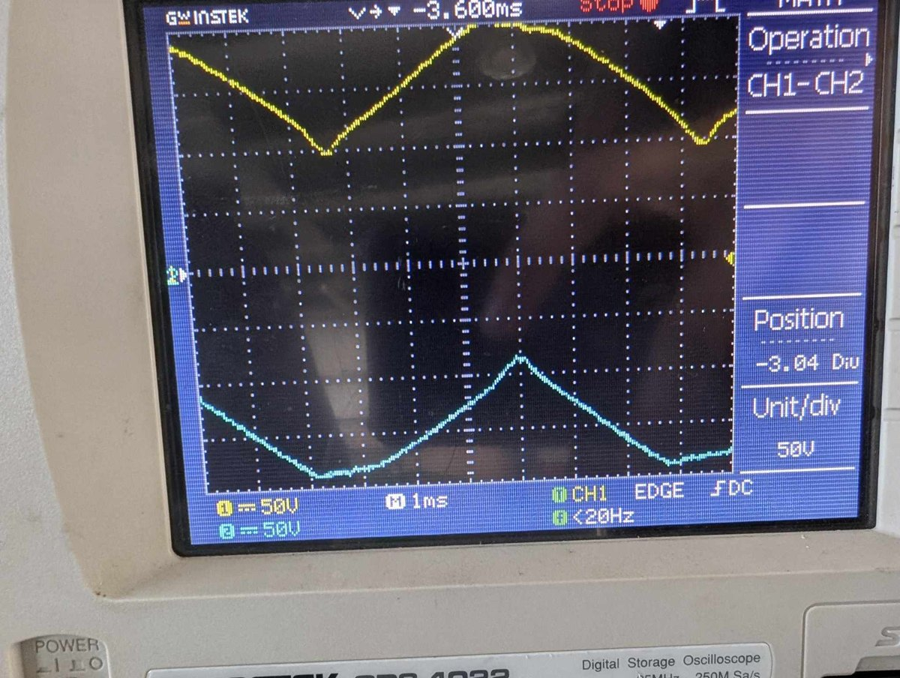

Voir ce que fait vraiment un redresseurSee what a rectifier actually does
Le passage du courant alternatif au continu se lit dans un schéma, une équation et une forme d’onde mesurée. Ces TP rassemblent ces vues pour comprendre les écarts entre idéal et réel.AC-to-DC conversion can be read through a circuit, an equation and a measured waveform. These labs bring those views together to understand gaps between ideal and real behaviour.
Les séances portent sur un redresseur triphasé à diodes, un pont mixte monophasé à diodes et thyristors, puis les effets du lissage et de l’empiètement de commutation. Les rapports d’origine documentent les montages, grandeurs attendues et observations.The sessions cover a three-phase diode rectifier, a single-phase semi-controlled diode/thyristor bridge, then smoothing and commutation overlap. The original reports document setups, expected quantities and observations.
Ce sont des travaux pratiques académiques, menés avec les groupes indiqués dans les comptes rendus. Je présente ici ce que les rapports démontrent sans attribuer à une seule personne l’ensemble des mesures ou de la rédaction collective.These are academic labs completed with the groups named in the reports. This page explains what the reports demonstrate without attributing all measurements or group writing to one person.
- RedressementRectification
Chemin du courant dans les topologies à diodes et thyristors.Current paths in diode and thyristor topologies.
- CommandeControl
Effet de l’angle d’amorçage sur un pont mixte.Effect of firing angle in a semi-controlled bridge.
- QualitéWaveform quality
Lissage, ondulation et empiètement de commutation.Smoothing, ripple and commutation overlap.
Du calcul à la forme d’ondeFrom calculation to waveform
Les trois manipulations confrontent calculs et observations sur banc. Les deux premières ajoutent une simulation MATLAB/Simulink pour compléter la comparaison.All three experiments compare calculations with bench observations. The first two also use MATLAB/Simulink simulations for a further comparison.
Pour le pont triphasé, le schéma de conduction explique la succession des diodes actives et la tension redressée. Pour le pont mixte monophasé, les thyristors ajoutent une variable de commande : l’angle d’amorçage change la tension moyenne et la forme d’onde.For the three-phase bridge, conduction paths explain the active diode sequence and rectified voltage. In the single-phase semi-controlled bridge, thyristors add a control variable: firing angle changes average voltage and waveform.
La troisième étude suit l’effet d’une inductance de lissage et de la commutation non instantanée. Elle relie le comportement théorique du montage aux mesures faites sur le banc et à l’oscilloscope.The third study examines smoothing inductance and non-instantaneous commutation. It connects theoretical circuit behaviour with bench and oscilloscope measurements.
- PrévoirPredict
Déduire la tension et les séquences de conduction.Derive voltage and conduction sequences.
- SimulerSimulate
Pour les deux premiers TP, reproduire le montage dans MATLAB/Simulink.For the first two labs, reproduce the circuit in MATLAB/Simulink.
- MesurerMeasure
Comparer les formes d’onde au banc de TP.Compare waveforms at the lab bench.

Trois comptes rendus à parcourirThree reports to explore
Les trois PDF publiés sont les rapports d’origine du projet. Ils sont conservés tels quels, avec leurs schémas, simulations, relevés et conclusions.The three published PDFs are the original project reports. They are preserved as they were, with circuits, simulations, measurements and conclusions.
Le premier décrit le redressement triphasé à diodes. Le deuxième traite du pont mixte monophasé. Le troisième analyse lissage et empiètement anodique. Ensemble, ils montrent comment passer d’une topologie de conversion à des grandeurs vérifiables.The first covers three-phase diode rectification. The second studies the single-phase semi-controlled bridge. The third examines smoothing and commutation overlap. Together they show how to move from converter topology to checkable quantities.
Les résultats restent ceux de séances pédagogiques ; ils ne constituent ni un produit industriel ni une qualification d’équipement.The results belong to teaching labs; they are neither an industrial product nor an equipment qualification.
- P3 / PD3P3 / PD3
Dans le premier TP, environ 160 V à 3 A et 31,25 % d’ondulation en simple voie, contre 310 V à 3 A et 4,83 % en double voie.In the first lab, about 160 V at 3 A with 31.25% ripple for the single-way arrangement, versus 310 V at 3 A with 4.83% ripple for the bridge.
- Pont mixteSemi-controlled bridge
Deux thyristors et deux diodes : la tension moyenne mesurée passe d’environ 230 V à 55 V lorsque l’angle passe de 0,07π à 2π/3.Two thyristors and two diodes: measured average voltage falls from about 230 V to 55 V as firing angle changes from 0.07π to 2π/3.
- CommutationCommutation
Dans le troisième TP, la tension moyenne en simple voie passe de 156 V à 1,5 A à 151 V à 7 A. Ces valeurs restent celles du montage étudié.In the third lab, single-way mean voltage falls from 156 V at 1.5 A to 151 V at 7 A. These values apply to the documented setup.

Pourquoi ces TP comptentWhy these labs matter
Ils donnent une base concrète pour lire les convertisseurs : suivre les composants qui conduisent, anticiper l’effet de la commande et confronter calcul, simulation et banc.They provide a concrete basis for reading converters: trace conducting devices, predict control effects and compare calculation, simulation and bench data.
Les liens ci-dessous pointent uniquement vers les trois rapports d’origine déjà publiés.The links below point only to the three original reports already published.